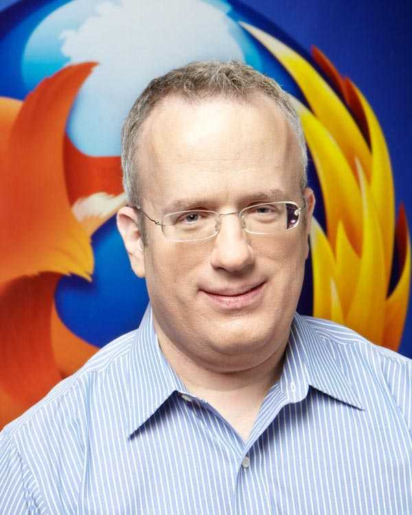

<div class="profile"><div>
  <div class="source">
JavaScript (1995)
  </div>
  <div class="detail">
    
    <div class="search"><a href="http://www.google.com/cse?cx=partner-pub-6997921015773263:4467526896&ie=UTF-8&q=Brendan Eich" target="_blank"></a> | <a href="http://en.wikipedia.org/wiki/Brendan_Eich" target="_blank">wiki</a></div>
    <div class="name">Brendan Eich</div>
    <div class="info">Brendan Eich ( /<span class="IPA">ˈaɪk</span>/; born 1961) is a computer programmer and creator of the JavaScript scripting language. 
    <p><b><a href="http://en.wikipedia.org/wiki/JavaScript" target="_blank">JavaScript</a></b> is a prototype-based scripting language that is dynamic, weakly typed and has first-class functions. It is a multi-paradigm language, supporting object-oriented, imperative, and functional programming styles.</p><p>
JavaScript was formalized in the ECMAScript language standard and is primarily used in the form of client-side JavaScript, implemented as part of a Web browser in order to provide enhanced user interfaces and dynamic websites. This enables programmatic access to computational objects within a host environment.</p>
    </div>
  </div>
  <div class="photo">
    
  </div>
</div></div>